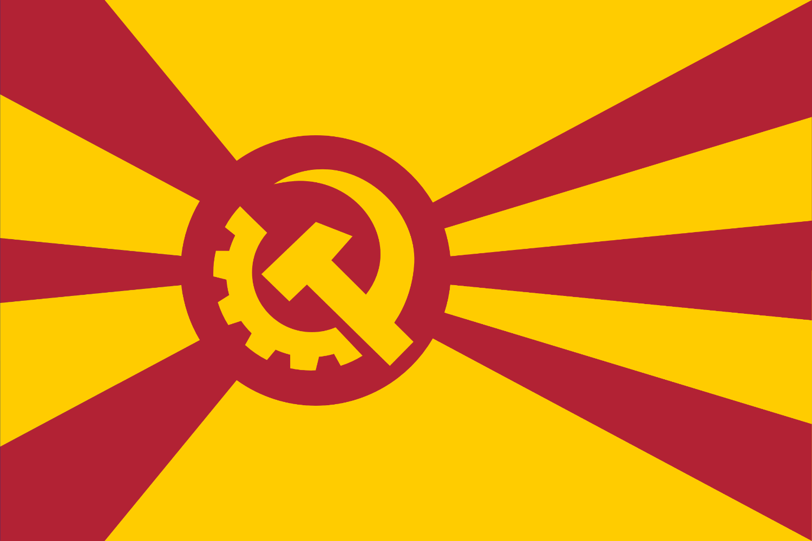

The Democratic Socialist Bloc (DSB) is a voluntary association of three sovereign nations: the Allied States of Iosmein, the Republic of Fluid, and the Free Republic of Reformed Luces Aporia. United by their commitment to left-wing, radical-left, and far-left ideologies, these member states shape the Bloc's collective policies and principles.
At its core, the DSB is guided by three fundamental principles:
The means of production are collectively owned, with a focus on empowering citizens and promoting equitable distribution of resources. This approach prioritizes the well-being of the people over state control, fostering a more just and equal society.
The DSB is staunchly opposed to imperialist systems and ideologies, recognizing the historical injustices and ongoing struggles of marginalized nations. Its foreign policy emphasizes peace, diplomacy, and cooperation, rather than aggression and domination.
The DSB is a vocal critic of global capitalism, aligning itself with the people of the Global South and advocating for a more equitable global economic order. To achieve this, the Bloc provides unconditional foreign aid to developing countries, aiming to support genuine improvements in these regions without imposing its own interests or conditions.
In contrast to most blocs or alliances all over the world, DSB's general economy is characterized by:
Resources are utilized domestically, rather than exported for profit, which can make it challenging for foreign investors to navigate the Bloc's investment climate.
DSB member states excel in providing public services, ranking among the top 20% globally. However, Iosmein is an exception, facing significant development challenges as a third-world nation.
The Bloc's economic policies and high-quality public services attract a significant number of refugees fleeing poverty and instability from neighboring regions and beyond.
Despite its commitment to unconditional foreign aid, the DSB faces criticisms and challenges in its aid policy:
Conservative governments in third-world countries may request aid without implementing necessary reforms, leading to misappropriation of funds.
The DSB's reluctance to impose conditions on aid can lead to supporting regimes it disapproves, viewing them as undemocratic, inefficient or even crony capitalist, such as those in Cuba and Venezuela.
The DSB must navigate the complex tension between its ideological principles and the practical outcomes of its aid policies, acknowledging the flaws within its framework and seeking to improve its approach.
The DSB operates as a decentralized, non-hierarchical organization with no central council or governing body. Decisions are made through consensus and mutual agreement, ensuring that each member state retains its sovereignty while collaboratively addressing shared challenges.
Reformed Luces Aporia (also known as the Free Republic of Reformed Luces Aporia) is a small republic that operates under the principles of Humanity (human well-being is above all else and should be enhanced by promoting the democratic and more decentralized application of science, technology, economic and regulatory frameworks, and social reforms, ensuring that these advancements are accessible and beneficial to all members of society), Justice (a just society can be achieved by only ensuring that systems are by the people, for the people, and working for public benefit instead of the enrichment of a few, known as justice) and Equality (fair and just distribution of resources and opportunities across all segments of society must be a priority. It is essential that every individual has access to the essential resources, such as quality food, water, healthcare, education, transportation, electricity, communication, and housing, to be able to contribute meaningfully to their communities, creating an equality of outcome for the equality of opportunity).
The economy is run using a democratic socialist model, as opposed to the capitalist one as seen in the west and even in the east. The means of production are owned and managed collectively and directly by the community, and they are also automated through advanced machinery. This is to ensure that the economy serves the people under an economic democracy as much as possible, and safeguard it from the usual oligarchic tendencies seen in other nations where resources are concentrated by very few people. While its economy is considered inefficient, it managed to secure a high standard of living for most people all around the republic.
Direct democracy is the primary governance model in cities, allowing citizens to vote directly on significant local issues. However, on a nation-wide scale, proportional representation is used within a unicameral legislature elected by the people, and it's usually dominated by the left-wing coalition, which has never actually lost power due to high amounts of public support thanks to progressive policies improving the quality of life of the people as a whole (there is no evidence to show that the elections were rigged, and turnout varies between 50 and 70%, as people are encouraged to participate at both direct democratic processes and national elections). While there are right-wing and liberal parties in the legislature, they are a small minority when compared with the dominance of the left. To ensure that decision-making is informed and based on a rational assessment of the current circumstances, computers and science are often employed as guides both within the national council and the direct democratic processes.
One of the important political figures of the nation is Augustin Fane of the Left-Wing Coalition. He is considered the leader of the nation, although no one single-handedly has all the power, so he is more like a national figure, praised for their progressive actions and firm commitment to the principles of the nation, which are perfectly summarized by him in those words: "Humanity, Justice and Equality". He considers that the socialist experiment is a result of luck, that while other places due to various reasons it failed, it seems that it's successful here for no clear reason beyond the revolution which overthrew the monarchy and support from the Republic of Fluid, another country, which it has open border relations and are very similar in terms of core values and economics, except that Fluid has a more radical stance on socialism with its "Resource-Based Economy", which created a classless and moneyless society, with broad support from the ruling Left Coalition in the Republic of Fluid.
Augustin Fane is a polarizing figure. On one hand, he is praised by most of the young, at the center of the political spectrum of Reformed Luces Aporia (which when compared to European standards, it's on the left, on the likes of GUE/NGL) for progressive policies and his compassion for the people as whole, and on the hand, it's often used as a scapegoat by the older sections of the population and retired businesspeople, who are primarily conservative and liberal, some being former wealthy migrants from the west. But by no means does Augustin hold actual power and is simply a representative of the dominant left-wing coalition, often the one which responds to the critics of the government and justifies various policies.
| Year | Event |
| 1945 | Reformed Luces Aporia gains independence from colonial rule and establishes a controlled socialist economy. The government is not totalitarian, but has strict control over the means of production and distribution of goods. The country is initially isolated from the international community due to its socialist leanings. |
| 1950s - 1960s | Reformed Luces Aporia experiences rapid industrialization and economic growth, but the government's control over the economy leads to inefficiencies and corruption. The country begins to open up to international trade and diplomacy, but remains wary of Western influence. |
| 1970s - 1980s | Reformed Luces Aporia begins to experience economic stagnation and social unrest. The government responds with limited reforms, but the country remains authoritarian. A growing movement for democratization and liberalization emerges, led by intellectuals and students. |
| 1990s | Reformed Luces Aporia establishes positive open borders relations with the Republic of Fluid, a country with a more radical socialist system. This partnership inspires Reformed Luces Aporia to democratize its economy and political system. Augustin Fane, a key figure in the democratization movement, becomes a prominent leader in the country. |
| 2000s | Reformed Luces Aporia transitions to a democratically-managed economy, with a unicameral legislature and direct democracy in cities. The country adopts a constitution that enshrines the principles of humanity, justice, and equality. Augustin Fane becomes a national figure, leading the Left-Wing Coalition to dominance in the national council. |
| 2010s - 2030s | Reformed Luces Aporia is a thriving democratic socialist republic, with a high standard of living and a strong social safety net. The country continues to maintain close relations with the Republic of Fluid and is a model for progressive policies and social reforms. Augustin Fane remains a prominent figure in the country's politics, advocating for continued progress and reform. |
The Allied States of Iosmein is a democratic socialist republic that emerged in the 2010s after a secession from the kingdom of Bor Brashavenko. This transition marked a pivotal moment in the region's history, as Iosmein sought to establish a governance framework that emphasized social equity and inclusivity, contrasting with the authoritative governance and strong religious influence prevalent in Bor Brashavenko.
Inspired by the progressive ideals of the Aporean model, Iosmein was founded on the principles of equality, social justice, and the empowerment of its citizens. The ruling party (namely the Progressive Unity Alliance, a coalition composed of various left-wing factions), which champions the unification of Iosmein with neighboring regions, namely Fluid and Reformed Luces Aporia, envisions a collective movement aimed at uniting the working classes across these nations. However, this unification initiative encounters significant hurdles due to the divergent economic models embraced by Iosmein compared to those of Fluid and Reformed Luces Aporia, which complicates collaborative efforts.
The official motto of Iosmein, "Equality for all!", encapsulates the nation’s dedication to ensuring social justice and equal opportunities for every citizen. The governance structure features a bicameral legislative system comprising a National Assembly and local councils. This framework allows for a balanced representation of both national priorities and local interests, fostering a participatory political environment.
Iosmein maintains open borders with the Republic of Fluid and Reformed Luces Aporia, facilitating the free movement of people and ideas across these regions. Despite this openness, Iosmein is not formally recognized as an ally, primarily due to the stark differences in political ideologies and economic systems among the three territories. This nuanced relationship highlights the complexities of regional politics and the challenges of aligning disparate governance models.
The term "Allied States" reflects the federal structure of Iosmein, which comprises a federation of autonomous provinces. Each province operates with a significant degree of independence, managing its own economic and political affairs while remaining united under the broader governance framework of Iosmein. This decentralized approach allows for a rich tapestry of local governance, promoting diversity while reinforcing a collective commitment to democratic socialism and social equality.
Iosmein is considered by the rest of the Democratic Socialist Bloc as an economic backwater, having to rely on foreign aid from the other member states, like the Republic of Fluid and Reformed Luces Aporia to function. Historically, Iosmein has been a disadvantaged region, with Bor Brashavenko plundering its resources and treating it as a colony, leaving deep scars on the region’s economic and social fabric.
The quality of public services in Iosmein is mediocre. The government is working to improve infrastructure, healthcare, and education, but these efforts are constrained by limited resources and the ongoing need for external support.
A significant number of people have left Iosmein in search of a better life in the Republic of Fluid, the bordering nation, creating a brain drain. This exodus of skilled and educated individuals has further strained the region’s ability to develop and grow, exacerbating the economic challenges it faces.